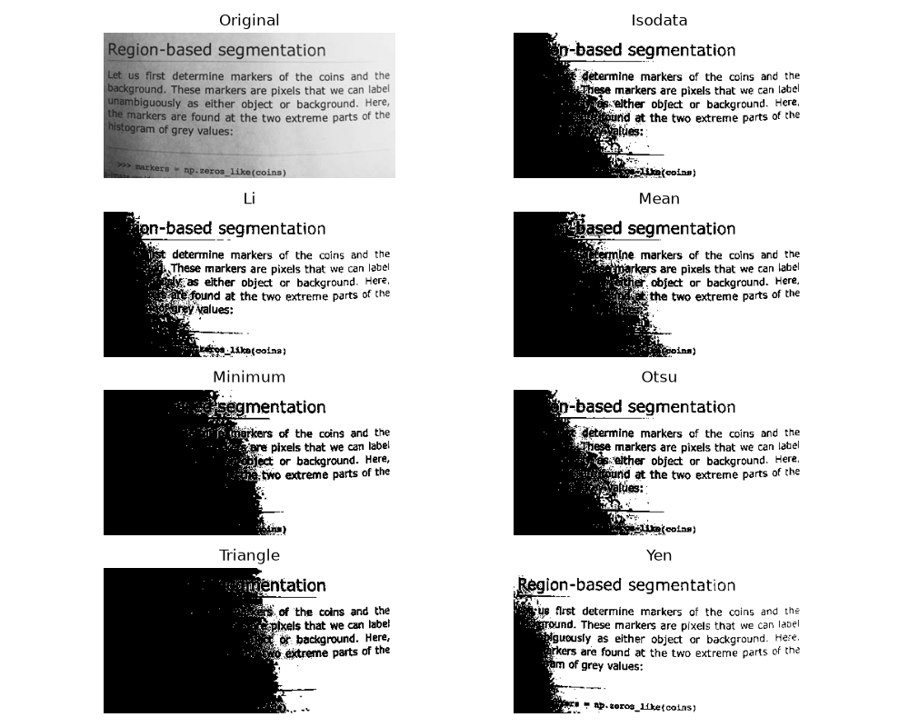
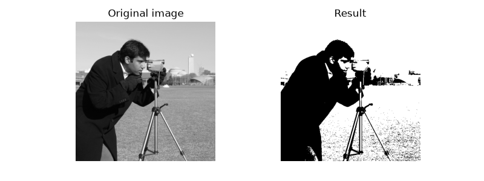
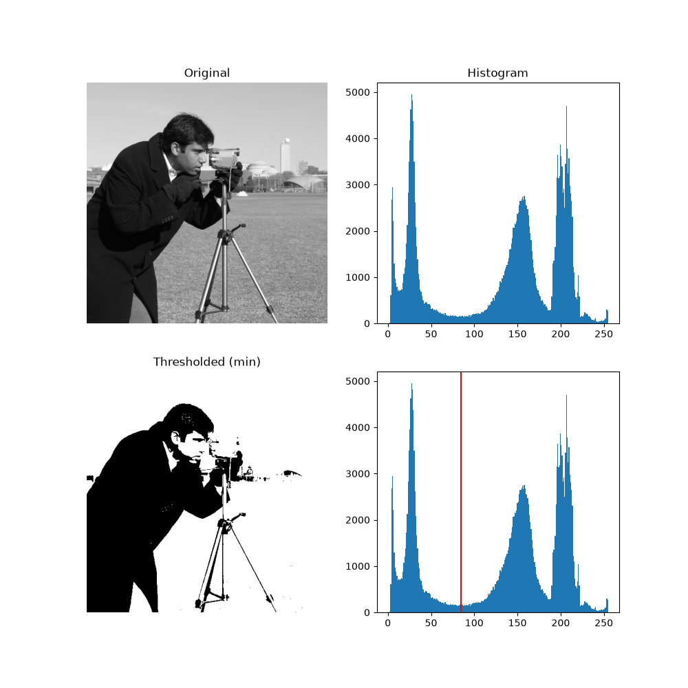
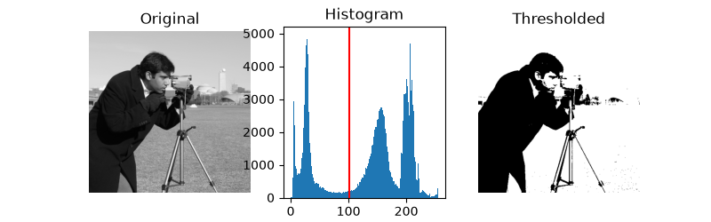
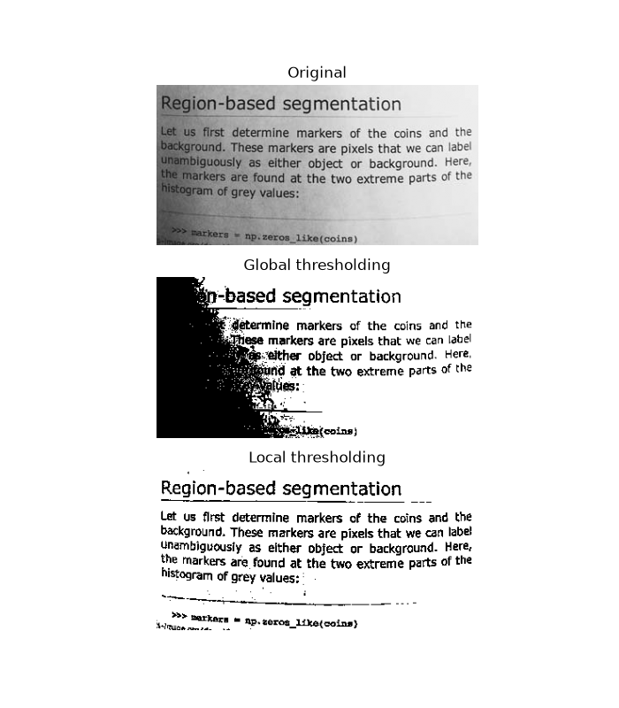
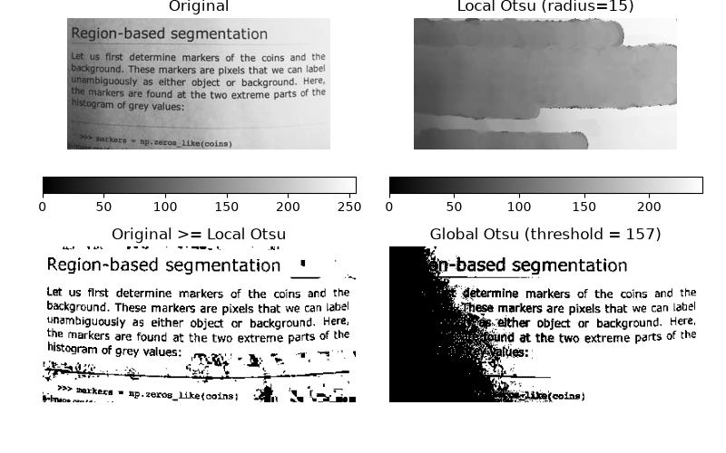

Note
Go to the end to download the full example code or to run this example in your browser via Binder
Thresholding#
Thresholding is used to create a binary image from a grayscale image [1]. It is the simplest way to segment objects from a background.
Thresholding algorithms implemented in scikit-image can be separated in two categories:
Histogram-based. The histogram of the pixels’ intensity is used and certain assumptions are made on the properties of this histogram (e.g. bimodal).
Local. To process a pixel, only the neighboring pixels are used. These algorithms often require more computation time.
If you are not familiar with the details of the different algorithms and the underlying assumptions, it is often difficult to know which algorithm will give the best results. Therefore, Scikit-image includes a function to evaluate thresholding algorithms provided by the library. At a glance, you can select the best algorithm for you data without a deep understanding of their mechanisms.
See also
Presentation on Rank filters.
import matplotlib.pyplot as plt
from skimage import data
from skimage.filters import try_all_threshold
img = data.page()
fig, ax = try_all_threshold(img, figsize=(10, 8), verbose=False)
plt.show()

How to apply a threshold?#
Now, we illustrate how to apply one of these thresholding algorithms. This example uses the mean value of pixel intensities. It is a simple and naive threshold value, which is sometimes used as a guess value.
from skimage.filters import threshold_mean
image = data.camera()
thresh = threshold_mean(image)
binary = image > thresh
fig, axes = plt.subplots(ncols=2, figsize=(8, 3))
ax = axes.ravel()
ax[0].imshow(image, cmap=plt.cm.gray)
ax[0].set_title('Original image')
ax[1].imshow(binary, cmap=plt.cm.gray)
ax[1].set_title('Result')
for a in ax:
a.axis('off')
plt.show()

Bimodal histogram#
For pictures with a bimodal histogram, more specific algorithms can be used. For instance, the minimum algorithm takes a histogram of the image and smooths it repeatedly until there are only two peaks in the histogram.
from skimage.filters import threshold_minimum
image = data.camera()
thresh_min = threshold_minimum(image)
binary_min = image > thresh_min
fig, ax = plt.subplots(2, 2, figsize=(10, 10))
ax[0, 0].imshow(image, cmap=plt.cm.gray)
ax[0, 0].set_title('Original')
ax[0, 1].hist(image.ravel(), bins=256)
ax[0, 1].set_title('Histogram')
ax[1, 0].imshow(binary_min, cmap=plt.cm.gray)
ax[1, 0].set_title('Thresholded (min)')
ax[1, 1].hist(image.ravel(), bins=256)
ax[1, 1].axvline(thresh_min, color='r')
for a in ax[:, 0]:
a.axis('off')
plt.show()

Otsu’s method [2] calculates an “optimal” threshold (marked by a red line in the histogram below) by maximizing the variance between two classes of pixels, which are separated by the threshold. Equivalently, this threshold minimizes the intra-class variance.
from skimage.filters import threshold_otsu
image = data.camera()
thresh = threshold_otsu(image)
binary = image > thresh
fig, ax = plt.subplots(ncols=3, figsize=(8, 2.5))
ax[0].imshow(image, cmap=plt.cm.gray)
ax[0].set_title('Original')
ax[0].axis('off')
ax[1].hist(image.ravel(), bins=256)
ax[1].set_title('Histogram')
ax[1].axvline(thresh, color='r')
ax[2].imshow(binary, cmap=plt.cm.gray)
ax[2].set_title('Thresholded')
ax[2].axis('off')
plt.show()

Local thresholding#
If the image background is relatively uniform, then you can use a global threshold value as presented above. However, if there is large variation in the background intensity, adaptive thresholding (a.k.a. local or dynamic thresholding) may produce better results. Note that local is much slower than global thresholding.
Here, we binarize an image using the threshold_local function, which calculates thresholds in regions with a characteristic size block_size surrounding each pixel (i.e. local neighborhoods). Each threshold value is the weighted mean of the local neighborhood minus an offset value.
from skimage.filters import threshold_otsu, threshold_local
image = data.page()
global_thresh = threshold_otsu(image)
binary_global = image > global_thresh
block_size = 35
local_thresh = threshold_local(image, block_size, offset=10)
binary_local = image > local_thresh
fig, axes = plt.subplots(nrows=3, figsize=(7, 8))
ax = axes.ravel()
plt.gray()
ax[0].imshow(image)
ax[0].set_title('Original')
ax[1].imshow(binary_global)
ax[1].set_title('Global thresholding')
ax[2].imshow(binary_local)
ax[2].set_title('Local thresholding')
for a in ax:
a.axis('off')
plt.show()

Now, we show how Otsu’s threshold [2] method can be applied locally. For each pixel, an “optimal” threshold is determined by maximizing the variance between two classes of pixels of the local neighborhood defined by a structuring element.
The example compares the local threshold with the global threshold.
from skimage.morphology import disk
from skimage.filters import threshold_otsu, rank
from skimage.util import img_as_ubyte
img = img_as_ubyte(data.page())
radius = 15
footprint = disk(radius)
local_otsu = rank.otsu(img, footprint)
threshold_global_otsu = threshold_otsu(img)
global_otsu = img >= threshold_global_otsu
fig, axes = plt.subplots(2, 2, figsize=(8, 5), sharex=True, sharey=True)
ax = axes.ravel()
plt.tight_layout()
fig.colorbar(ax[0].imshow(img, cmap=plt.cm.gray), ax=ax[0], orientation='horizontal')
ax[0].set_title('Original')
ax[0].axis('off')
fig.colorbar(
ax[1].imshow(local_otsu, cmap=plt.cm.gray), ax=ax[1], orientation='horizontal'
)
ax[1].set_title(f'Local Otsu (radius={radius})')
ax[1].axis('off')
ax[2].imshow(img >= local_otsu, cmap=plt.cm.gray)
ax[2].set_title('Original >= Local Otsu')
ax[2].axis('off')
ax[3].imshow(global_otsu, cmap=plt.cm.gray)
ax[3].set_title('Global Otsu (threshold = {threshold_global_otsu})')
ax[3].axis('off')
plt.show()

= Local Otsu, Global Otsu (threshold = {threshold_global_otsu})" class = "sphx-glr-single-img"/>Total running time of the script: (0 minutes 3.154 seconds)